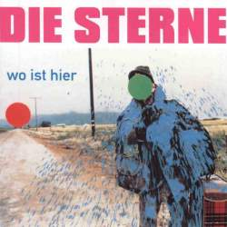

Ich steh auf, wenn ich kann / Ich leg mich hin, weil ich muß / Ich finde keine Ruhe / Ich variiere meinen Rhythmus / Vertraute Wege aber weit / Ich brauche die Beharrlichkeit / Ich brauch das Übertreiben / Ich kann es nur nicht leiden / Es ist genug jetzt / Ich glaube nicht, daß ich das muß / Ich geh dann erst mal duschen / Vielleicht springe ich in den Fluß / Es ist da und teilt mich auf / Zwischen sich und Tageslauf / Das ist alles nicht mehr wahr / Und trotzdem immer da / Es geht noch schneller / Und kostet noch mehr Kraft / Der Ort an dem wir leben ist / im Vergleich zu dem / Der kommt ein Kaff / Cool - wenn jemand Händchen hält / Ich hab mir das nicht vorgestellt / Wie es ist / Und schon gar nicht wie es wird / Es ist so passiert / Ich glaube doch ich atme noch / Und wen es interessiert / Ich bin es noch / Ich bin noch nicht krepiert / Ich steh auf, wenn ich kann / Ich leg mich hin, weil ich muß / Ich finde keine Ruhe / Ich variiere meinen Rhythmus.
Wir steigen irgendwo aus und wissen nicht mehr wo wir sind / Die Welt ist voller Zeichen, doch für manche sind wir blind / Wir kommen durcheinander mit verschiedenen Signalen / Wenn uns was zu krass wird, dann wollen wir das nicht haben / Wir sind viele und wir sind zu zweit / Wir sind big in Berlin tonight / Wir wissen nicht mehr wo wir sind und steigen lieber aus / Wir sind unterwegs und doch irgendwie zuhaus / Ein Himmel voller Lichter wärmt die Herzen hier / Ein Meer von Attraktionen und dazwischen wir / Wir sind viele und wir sind zu zweit / Wir sind big in Berlin tonight / Vielleicht gibt es was Neues, vielleicht wars schon immer da / Ich versuch mich zu erinnern, wie das letztes mal nochmal war / Wir steigen hier aus und wissen nicht mehr wo wir sind / Wir könnten jemand fragen, das könnte jedes Kind / Wir sind viele und wir sind zu zweit / Wir sind big in Berlin tonight
Wir müssen nichts so machen wie wir's kennen / nur weil wir's kennen, wie wir's kennen. / Wir können das vermeiden, indem wir uns anders entscheiden. / Wir sind die Zukunft und das Licht. / Ihr könnt uns folgen, oder nicht / und uns dann beneiden, / oder einfach wie versteinert stehenbleiben. / Wir sind einfach zu verstehen. Wir sind einfache Menschen. / Wenns Geschenke gibt, dann nicht weil wir uns welche wünschen. / Sondern weil wir leben / uns bewegen / und wir nehmen / bitteschön- was uns gehört, wenns nicht stört. / Wir schwirren voraus und das kaum geradeaus. Da ist kein Weg wir treiben. / Aber alles besser als stehenzubleiben. / Wir müssen nichts so machen wie wir's kennen, / nur weil wir's kennen, wie wir's kennen. / Wir müssen nichts so machen wie wir's kennen, / nur weil wir's kennen, wie wir's kennen. / Wir müssen nichts so machen wie wir's kennen, / nur weil wir's kennen, wie wir's kennen.
Du bist gierig und deine Gier hängt Dir zum Hals raus, / wie eine Schlange -und sie stinkt- / sie hängt da schon lange, obwohl das nichts bringt -dumm rum. / Genau wie Du. / Es gibt Streit und dies hier wird ein Angriff auf deine Häßlichkeit. / Nimm es hin. / Dingeling. / Du sitzt da und leidest und Dir fällt nichts ein. / Nur ab und zu kommt jemand um dein Kumpel zu sein. / Und dann denkt ihr zusammen nicht lange nach / und bewundert Euch gegenseitig für irgendetwas. / Deine Brüder und Schwestern finden es alle normal. / Sie finden immer allerhand normal was ihnen gerade in den Kram paßt. / In ihre gierigen Taschen oder notfalls unter Sofas. / Oder kuck mal hoppla, na wo gibt's denn so was. / Besser an manchen Möbeln rückt man nicht. / Könnte ja sein das da was liegt. / Eine kleine Reptilie vielleicht, na das kommt vor und bleibt / in der Familie. / Dingeling / Ich will das Elend beenden. Ich kanns nicht mehr sehen. / Ich will mich abwenden und gehen. / Um wieder irgendwas zu tun, was mir Spaß macht. / Vielleicht gleich? Vielleicht heut noch? Vielleicht wird's was? Mal sehen / ...
Was, wenn wir erzählen / von diesem Weg / der uns bevorsteht / und wie man ihn geht / Da warst Du am Anfang / da bist Du jetzt / Wir sind keine Grenzen / Es gibt kein Gesetz / Wir sind so lange hier / unterwegs / Wir sind so weit weg / Wo ist hier / Wir können uns erkennen / Wir können uns erreichen / Ich kann, doch ich muß nicht / Ich will es beweisen / Erkennst Du ein Zentrum / Ich kenne keins / Ich find's auch nicht wichtig / Eins oder keins / Wir sind so lange hier / unterwegs / Wir sind so weit weg / Wo ist hier
Wir brauchen einen Beat um dieses Biest zu zerstören. / Ich sehe das so es kommt in diesem Fall nicht auf den Fall an, es empfiehlt / sich dieses Ding hier gleich einfach wegzuballern.
Wir tun das Gegenteil von dem, was du dir rätst, / wenn du dein eigener Arzt bist. / Wenn wir nicht so verzweifelt hier sein wollen, können wir ja rausgehen, oder ins Extrem. / Wenn wir dabei nicht so verzweifelt aussehen wollen bleiben wir hier, um zunächst / die Wohnung zu zerstören und dann neu zu beziehen. Ich weiß es gibt Krieg mit der Normalität. Und es wird spät. / Einiges ist eklig - anderes unerträglich, wie dein Sofa, wenn es glotzt als ob es gleich kotzt oder kollabiert, vor der Glotze nichts ist fesselnd, das ich nicht motze liegt genau daran: Niemand bindet dich an. / Es ist nur dein eigener Tran der hier rumsteht und den solltest du nicht trinken, das ist der Trick, / weil man daran erstickt. / Seit ich von hier fort schritt spürte ich den Spurt nicht mehr, es fühlte sich nicht mehr an wie Sport. / Ich wechsel nur den Ort mit steigender Frequenz und ich glänze dabei ungeheuer vor mich hin. Weil ich so schön bin, / wie die Sonne, wenn sie aufgeht, / wenn wo was drin ist was auch draufsteht. / Bevor du losgehst, denk daran, das ich dich kaum erwarten kann.
Die Jahreswende im Keller verbracht und bei der Feierei über Zahlen nachgedacht. / Nicht grad die schönste Zeit um zu verschwinden, doch / gut zu wissen, daß man Schutz finden kann - irgendwo. / Ich hab nichts von Veränderung gemerkt, hab nur gehört, daß es kracht. / Wenn man die Augen wieder aufmacht ist es Nacht / oder was gibt's hier zu sehen? Ich kann alles verstehen. / Wie lang soll ich bleiben? / Es hat keinen Sinn zu warten bis es besser wird / das bißchen besser / wär das warten nicht wert. / Ich bemerke, das ich selbst auch Spuren hinterlasse, jeden Tag, zum Beispiel mit der Kaffeetasse. / Kleine Ringe auf dem Tisch - und dann die Löcher im Teppich. / Und dann arbeitet man sich heran an das was man in der Dunkelheit vermutet, weil die doch / einiges verspricht, nur Licht gibt es hier leider nicht. / Doch viel mehr als nichts. Ich glaub ich hab was erwischt. / Es hat keinen Sinn zu warten bis es besser wird / - das bißchen besser / wär das warten nicht wert. / Du hast dich aufgerieben wie noch nie und deine Energie ist jetzt irgendwie weg. / Doch es hat Dich gegeben, du hast Spuren hinterlassen immerhin, jemand wird sich erinnern - nichts ist perfekt. / Gleich springt die Uhr auf Null / und das bedeutet nichts. / Doch es blitzt. / Wie ein Zeichen. / Es hat keinen Sinn zu warten bis es besser wird / das bißchen besser / wär das warten nicht wert.
Das scheinbare Nichtvorhandensein von erheblicheren Problemen, lenkt doch die Aufmerksamkeit eines großen Teils der Welt am Abend auf das alltägliche Geben und Nehmen, das in menschlichen Beziehungen gerne bis ins Detail besprochen und geregelt sein will. Dafür gibt's Zeitpunkt, Ort und auch eine Form von Unterhaltung, sie ist ganz häufig ein nicht unwichtiger Teil unserer Freizeitgestaltung. / Melodie d'Amour / Wir glauben, daß die Beschäftigung mit den verschiedenen Aspekten des Zusammenlebens für jeden Menschen persönlich etwas bringt und daß es manchmal auch notwendig ist, daß man sich etwas zur Auseinandersetzung mit diesen Dingen zwingt. Es kann nicht jeden Tag und immer nur von Harmonie die Rede sein und überhaupt, wer sehr viel redet, redet sich auch häufig selber etwas ein. / Melodie d'Amour / Die Ärzte sagen, das es möglich wäre ... Wenn Du dieses Lied hörst, bin ich vielleicht schon nicht mehr hier im Heim, doch sie sagen auch: fürs Erste sollten wir jetzt nicht zusammen sein; und ich kann mich ja erstmal theoretisch darauf vorbereiten, was mich in Zukunft so erwartet und miteinbeziehen, wie sich mein Leben in den Wochen nach der Kur gestaltet. Melodie d'Amour.
Dann gehst du raus und siehst dir / die Umgebung an / alles scheint wie immer kein Problem / Die Menschen sind noch da und auch die Autos / Wer was haben muß der braucht bloß / in den entsprechenden Laden zu gehen / und vorher Geld ziehen / Manchmal sagt man vertraute Sachen vor sich hin / weil man nicht sicher ist - ob sie noch stimmen / Es gibt Erfahrungen und nicht nur eine / zum Beispiel die von anderen / und dann noch deine / die einen haben's irgendwie geschafft / der andere weiß nur, das es ihm zu schaffen macht / die Nacht durchzustehen / denn es gibt da / nicht nur ein Problem / Manchmal sagt man vertraute Sachen vor sich hin / weil man nicht sicher ist - ob sie noch stimmen / Du findest irgendwo die Unterstützung die du brauchst / Auch dieser Tag geht irgendwann vorbei und die Nacht auch / Es ist nur ein Zustand der vorübergeht / und wenn es dann vorbei ist wirst du sehen, / daß es dir besser geht. / wenn es dann vorbei ist wirst du sehen, / daß es dir besser geht. / Manchmal sagt man vertraute Sachen vor sich hin / weil man nicht sicher ist - ob sie noch stimmen.
Ich mag wie Du mich ansiehst. / Ich finde es gut wenn Du's läßt. / Ich schätze es sehr, daß Du bestimmte Grenzen nicht verletzt